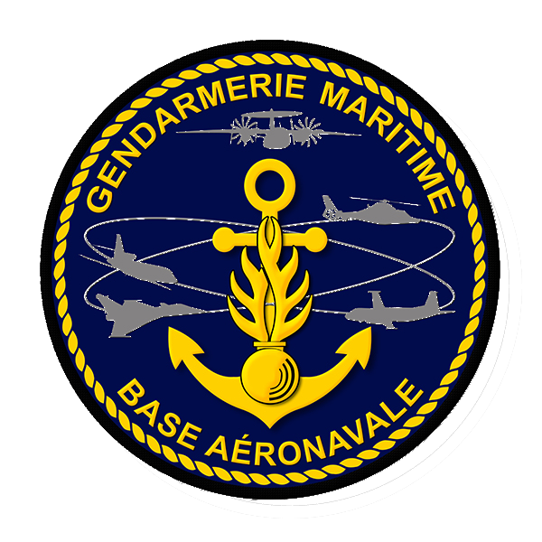
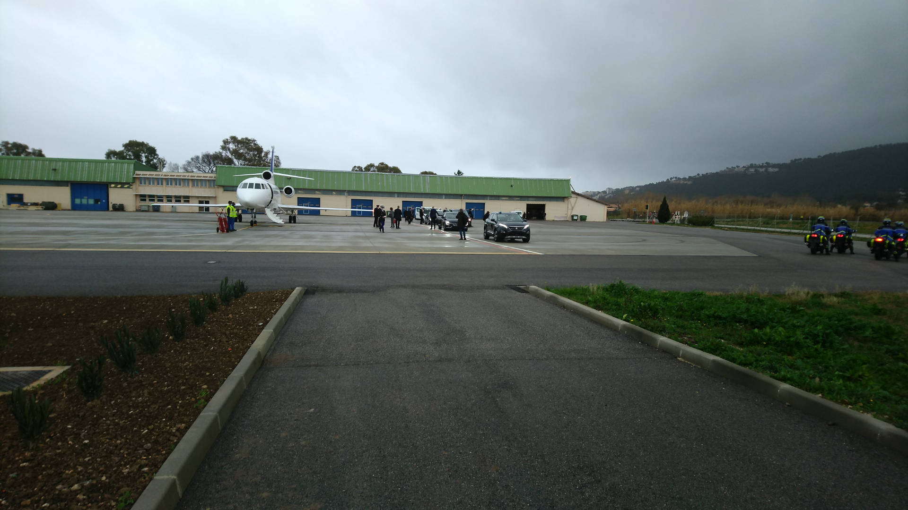

Brigade de gendarmerie maritime de Hyères

Missions :
La brigade de gendarmerie maritime de Hyères est implantée sur la base aéronavale éponyme. Elle assure : - La recherche du renseignement au profit de la Marine nationale, - La participation à la Protection et défense (Prodef) de la base en collaboration avec le Bataillon de fusiliers marins (BFM), - L'Équipe de sécurisation de navire a passager (Esnap) entre La Tour Fondue et Porquerolles ( sécurisation des navires à passagers à terre et en mer), - La protection des emprises de la Marine nationale dépendant de la Base aéronavale, - L'accueil des hautes autorités de l’État, - La surveillance de différents aéronefs français et étranger en transit sur la Base aéronavale, - Toutes les missions dévolues à la gendarmerie nationale.
Moyens :
Mobilité : - 2 Véhicules de patrouille, - Des vélos.
Effectifs :
- 8 personnels : 6 Sous-officiers, 2 Gendarmes adjoints volontaires. - Police Judiciaire : OPJ : 5 personnels. Les personnels ont un permis pistes (Documents qui permet de travailler sur des pistes d'aéroport).